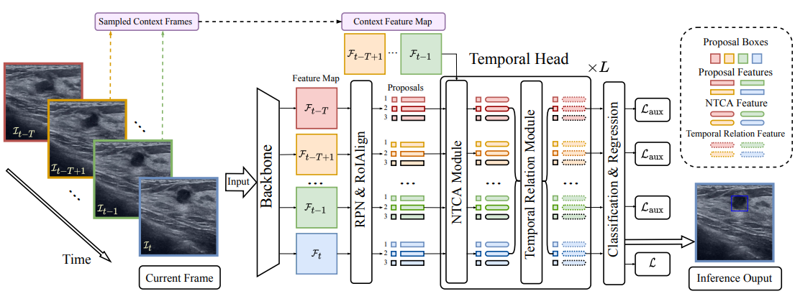

Research Projects
Current and past research initiatives

AI-Generated Medical Data
Knowledge-driven AI-generated data for accurate and interpretable breast ultrasound diagnoses.
ST-CellSeg
Cell segmentation for imaging-based spatial transcriptomics using multi-scale manifold learning.
Publications
Peer-reviewed papers and preprints
All
2024
2023
2024
Knowledge-driven AI-generated data for accurate and interpretable breast ultrasound diagnoses
arXiv preprint
ST-CellSeg: Cell segmentation for imaging-based spatial transcriptomics using multi-scale manifold learning
PLOS Computational Biology